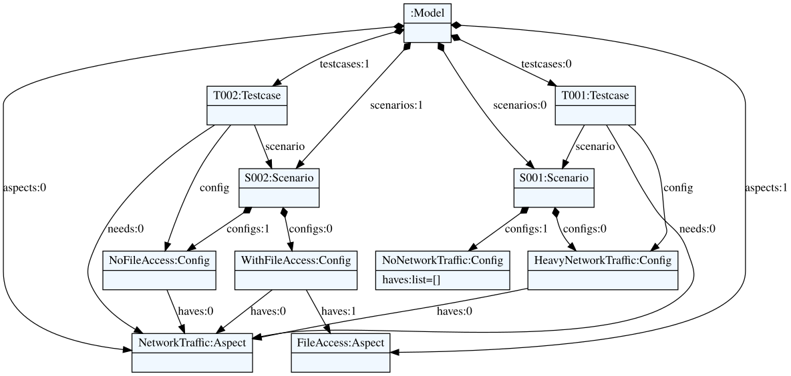

TextX Intro
TextX is a Python library to allow an easy creation of DSL validators and artifact generators:
- Reading model files (grammar based parsing, reference resolution and post processing).
- Validating the model.
- Generating output artifacts (e.g., code).
A fundamental difference to Xtext is that the meta model classes (describing the model elements) are dynamically generated instead of generating code from them. Thus, a grammar in TextX in interpreted dynamically and not compiled.
TextX has only few dependencies and very compact projects can be created. Details see (Dejanović et al. 2017) and the "TextX project page", see (TextX). TextX itself is permanently tested with different python versions.
Normally, a similar modularization as for Xtext projects is employed to separate different responsibilities across software modules (e.g. modules for the grammar, validation, and code generation). However, it is possible to put an entire project including grammar and the validation into one file: the following code illustrates a meta model with an example model which is validated (similar to the example in the introductory example of validation).
![Meta Model Example]()
from textx import metamodel_from_str from textx.scoping.providers import RelativeName, FQN from textx.export import model_export # ------------------------------------ # GRAMMAR # meta_model = metamodel_from_str(''' Model: aspects+=Aspect scenarios+=Scenario testcases+=Testcase; Scenario: 'SCENARIO' name=ID 'BEGIN' configs+=Config 'END'; Config: 'CONFIG' name=ID 'HAS' '(' haves*=[Aspect] ')'; Aspect: 'ASPECT' name=ID; Testcase: 'TESTCASE' name=ID 'BEGIN' 'USES' scenario=[Scenario] 'WITH' config=[Config] 'NEEDS' '(' needs*=[Aspect] ')' 'END'; Comment: /\/\/.*/; ''') # ------------------------------------ # SCOPING # meta_model.register_scope_providers({ '*.*': FQN(), 'Testcase.config': RelativeName('scenario.configs') }) # ------------------------------------ # VALIDATION # def check_testcase(testcase): """ checks that the config used by the testcase fulfills its needs """ for need in testcase.needs: if need not in testcase.config.haves: raise Exception("{}: {} not found in {}.{}".format( testcase.name, need.name, testcase.scenario.name, testcase.config.name )) meta_model.register_obj_processors({ 'Testcase': check_testcase }) # ------------------------------------ # EXAMPLE # model = meta_model.model_from_str(''' ASPECT NetworkTraffic ASPECT FileAccess SCENARIO S001 BEGIN CONFIG HeavyNetworkTraffic HAS (NetworkTraffic) CONFIG NoNetworkTraffic HAS () END SCENARIO S002 BEGIN CONFIG WithFileAccess HAS (NetworkTraffic FileAccess) CONFIG NoFileAccess HAS (NetworkTraffic) END TESTCASE T001 BEGIN USES S001 WITH HeavyNetworkTraffic NEEDS (NetworkTraffic) END TESTCASE T002 BEGIN //USES S001 WITH NoNetworkTraffic // Error USES S002 WITH NoFileAccess NEEDS (NetworkTraffic) END ''') model_export(model, 'model.dot')
